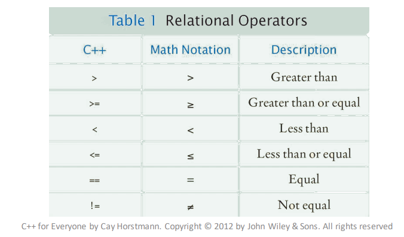

TIPUS ELEMENTALS DE DADES I INSTRUCCIONS BÀSIQUES
Variables, Constants i Expressions
Què és una variable:
En C++ hi ha tres parts referents a l'ús de les variables:
- Declaració: es defineix el nom i el tipus de la variable. tipus nom_variable;
- Inicialització i/o assignació: aquesta fase és la que es dóna un valor a la variable, pot ser en la mateixa declaració o bé en un moment posterior:
- En l'inicialització: En el moment de la declaració, se li assigna una valor. tipus nom_variable = valor;
- A posteriori: en qualsevol moment podem donar un valor a la variable: nom_variable = valor;
- Utilització: les variables es defineixen per ser usades, i per fer-ho només cal invocar el seu nom.
Pel que fa les constants:
Una constant és una variable que el seu valor no varia durant l'execució del programa. Tenim dos tipus de constants.
- Sense Nom: són aquelles que es dóna el seu valor directament com podria ser: 8, "hola", 'A', true, -2.5 .
- Amb Nom: són aquelles que tenen un tipus i nom donats pel programador. Es comporten igual que les variables que hem vist anteriorment.
La única diferència és que en la declaració s'utilitza la paraula clau const. Exemple: const tipus nom_variable = valor.
Ús de les variables en C++
#include <string>
using namespace std;
int main()
{
int variableEntera; // Declaració d'una variable entera usant notació camel.
variableEntera = 5; // Assignació d'una variable entera amb una constant sense nom (5 és una constant sense nom).
bool VARIABLE_LOGICA = true; //Declaració i inicialització d'una constant lògica utilitzant la notació de barra baixa.
char variable_caracter = 'P'; //Declaració i inicialització d'una variable caràcter utiltizant la notació de barra baixa.
unsigned int variable_natural, variableNatural; //Declaració de dues variables naturals.
variable_natural = 10; //Assignació d'una variable natural.
variableNatural = variable_natural; //Assignació d'una variable natural usant una altre variable natural.
string missatgeError= "Error, torna a introduir les dades", missatgeOK = "Finalitzacio correcte";//Declaració i inicilaització de dues variables tipus string (cadena de caràcters).
return 0;
}
Expressions
Operadors en C++
Com hem vist a tipus de variables cada tipus de variable té associats diferents operadors, i aquests operadors són de fàcil ús en C++, tot i que a vegades no s'expressen de la mateixa forma que matemàticament. A continuació hi ha una taula d'equivalències: